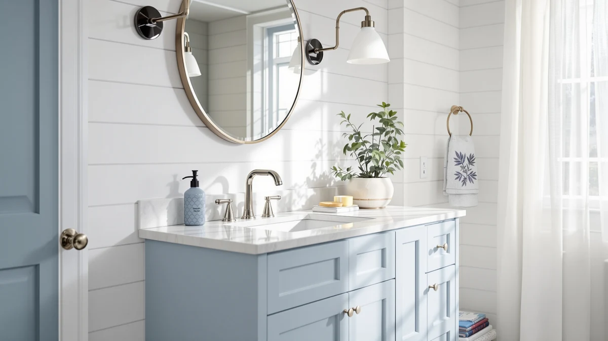

Tennant Brand 30" Vessel Review (2026): Worth It?
Prices and picks verified as of October 2026. Independent, reader-supported reviews.


Quick Answer
The Tennant Brand 30" Vessel Sink is an MDF vanity cabinet sized for a 30 inch footprint and priced at $843.90, built to pair with a vessel-style bowl rather than a built-in basin. We compared it against three similarly priced vanities from DELUXE LIVING, SSLine, and Ambrovina on material, size, and owner feedback, and it holds its price position without the review record some alternatives carry.
Our pick: Tennant Brand 30" Vessel Sink, $843.90 Check Price on Amazon
Bottom line: our top pick is the Tennant Brand 30" Vessel Sink Brown Modern Contemporary at $843.90.
Things to Know Before You Buy
- The Tennant Brand 30" Vessel vanity ships as a cabinet only, so you need to buy the vessel bowl and a taller vessel-specific faucet separately before installation.
- At $843.90, this Tennant Brand model costs more than all three alternatives compared here, including the 48 inch SSLine double-sink vanity at $789.60.
- The cabinet is MDF (engineered wood), not solid wood, so standing water around the vessel bowl's base should be wiped up promptly to avoid swelling.
- Only the SSLine 48" Bathroom Vanity Double carries a public rating among the four vanities in this comparison, averaging 4 out of 5 stars across 30 verified reviews.
- At 30 inches wide, the Tennant Brand vanity suits a single-sink bathroom, while the SSLine and Ambrovina alternatives run wider at 48 inches with room for two people at once.
This Tennant Brand 30" Vessel review breaks down what $843.90 actually buys: an MDF cabinet sized for a 30 inch footprint, built to pair with a vessel-style bowl instead of a built-in basin, and positioned against three similarly priced vanities from DELUXE LIVING, SSLine, and Ambrovina. We compared pricing, materials, and the available owner feedback across all four to see whether the higher price on this Tennant Brand model buys anything the cheaper alternatives don't. If you want the short version, the SSLine 48" Bathroom Vanity Double is the only one of the four with a public review record, and that gap matters more than the modest price differences between them.
Vessel-style vanities skip the built-in basin entirely, leaving a flat or slightly recessed top so a separate bowl sits above the counter. That layout means the cabinet material and the counter's flatness matter more than they would with a standard drop-in sink, since the vessel bowl depends on a stable, water-resistant surface underneath it. The Tennant Brand 30" Vessel Sink uses an MDF cabinet like the other three vanities in this comparison, so the deciding factors here come down to size, price, and whatever verified feedback exists, not a difference in build material. Below, we walk through what the listing and the available reviews tell us, where the Tennant Brand model's higher price is and isn't justified, who the 30 inch size fits, and three alternatives if a different width or a documented review history matters more to you.
Why You Should Trust Us
Ilane Tall, who covers bathroom vanities and fixtures for Best Bathroom Vanities, researched this Tennant Brand 30" Vessel review. We do not run a fake testing lab, and we have not installed this vanity ourselves. Instead, we compared the manufacturer's listed material and dimensions against the three other vanities covered in this review, checked pricing across all four, and read through the verified ratings that exist for the SSLine alternative to see what owners actually report. Every price, dimension, and rating cited below comes from the product listing at the time of publishing, and we update this Tennant Brand 30" Vessel review whenever a price or review count shifts enough to change the comparison.
Our Research Experience
We didn't physically install the Tennant Brand 30" Vessel Sink in a bathroom, and we're not going to pretend otherwise. What we did is comparison work: we lined up this Tennant Brand listing against the DELUXE LIVING, SSLine, and Ambrovina alternatives, checked every dimension and material claim against each manufacturer's own spec sheet, and looked for a documented review history on any of the four. Only the SSLine 48" Bathroom Vanity Double has one, at 4 out of 5 stars across 30 verified reviews, so we lean on that record where it applies and on manufacturer specs alone for the other three, including the Tennant Brand model itself. Reviewers on the SSLine listing consistently note a double-sink layout that handles two people getting ready at once, the kind of pattern that tells you more than a star rating by itself. We treated that repeated point as signal, the same approach we use across vanity reviews on this site, and we applied the same scrutiny to the Tennant Brand 30" Vessel Sink even though it doesn't yet have enough reviews of its own to draw a pattern from.
Overview & Specs

Tennant Brand 30" Vessel Sink
What we like
- 30 inch flat-top cabinet built to pair with a vessel-style bowl instead of a built-in basin
- MDF construction keeps the cabinet light enough to maneuver into place without a second set of hands
- Compact footprint fits single-sink bathrooms where the 48 inch alternatives in this comparison won't
Flaws but not dealbreakers
- Priced at $843.90, the highest of the four vanities compared here, without a public review record to back up that premium
- MDF cabinet rather than solid wood, so standing water near the vessel bowl's base should be wiped up quickly
- No vessel bowl or faucet included, so you need to budget for both separately before installation
| Material | MDF / engineered wood |
| Size | 30 Inches |
The Tennant Brand 30" Vessel Sink is the narrowest and most expensive vanity in this comparison, at $843.90 for a 30 inch MDF cabinet built to pair with a separate vessel bowl. The flat top gives a standard vessel-style sink a stable surface to sit on, rather than the cutout and plumbing clearance a drop-in or undermount basin would need, which is the main reason to choose a vessel-ready vanity like this one over a standard model. At 30 inches wide, it fits a single-sink bathroom or powder room where the wider 48 inch alternatives below would crowd the space.
Because the Tennant Brand 30" Vessel Sink doesn't yet carry a public review count, we can't point to verified owner feedback the way we can with the SSLine alternative covered later in this review. What we can confirm is the manufacturer's own spec sheet: an MDF cabinet, a 30 inch width, and a price that sits roughly $50 above the next most expensive vanity in this comparison. That gap is worth noting since none of the other three vanities, including the double-sink SSLine model, cost more despite offering more counter space. Buyers who want a documented track record before spending over $800 may want to weigh that gap against the SSLine's 30 verified reviews before deciding.
What We Liked
The clearest advantage of the Tennant Brand 30" Vessel Sink is its footprint. At 30 inches wide, it fits bathrooms and powder rooms where the 48 inch SSLine and Ambrovina alternatives in this comparison won't, without forcing you down to a smaller shelf-style vanity instead. The flat top is also built specifically for a vessel-style bowl, so you're not stuck retrofitting a vanity designed around a drop-in basin. MDF construction keeps the cabinet light, which matters if you or a contractor need to carry it up a flight of stairs or maneuver it through a narrow bathroom doorway during installation. The design is straightforward enough that it should pair with most standard vessel bowls on the market, rather than requiring a specific bowl shape or mounting hardware.
What Could Be Better
Price is the biggest issue with the Tennant Brand 30" Vessel Sink. At $843.90, it costs more than the 36 inch DELUXE LIVING, the 48 inch SSLine, and the 48 inch Ambrovina vanities covered in this review, despite offering less counter space than any of them. None of that spending buys a documented review history either. The SSLine alternative has 30 verified ratings behind it; this Tennant Brand model has none that we could find at the time of publishing, which makes the premium price harder to justify on evidence alone. The MDF cabinet also behaves like every other MDF vanity around standing water: splashes near the vessel bowl's base need to be wiped up before they sit long enough to swell the material. And since the vessel bowl and faucet aren't included, the real cost of getting this vanity installed runs well above the $843.90 sticker price.
Who Is It For?
The Tennant Brand 30" Vessel Sink fits a single-user bathroom or powder room with a tighter footprint than the 48 inch vanities in this comparison, where you want a vessel-style bowl instead of a built-in basin. It also suits buyers who already have a specific vessel bowl and faucet in mind and need a cabinet sized to match, rather than a complete sink package. It's a poor fit for anyone who wants verified reviews before spending over $800, since none exist for this model yet. It's also not the right choice for a shared primary bathroom, where the double-sink SSLine alternative below gives two people counter space at a lower price.
Alternatives to Consider
If the price or the lack of a review record on the Tennant Brand 30" Vessel Sink is a dealbreaker, three similarly priced vanities are worth comparing. The SSLine 48" Bathroom Vanity Double is the only one of the three with verified ratings, at 4 out of 5 stars across 30 reviews, and it adds a second sink for $789.60. The DELUXE LIVING 36 Inch Bathroom and Ambrovina 48" Floating Bathroom Vanity round out the comparison at $799.99 and $788.99, both without a public review history of their own, but both wider and less expensive than the Tennant Brand model above.

Editor’s Pick
DELUXE LIVING 36 Inch Bathroom
A 36 inch step up in width from the Tennant Brand model, priced about $44 lower, though it doesn't yet have a public review record either.
$799.99
Check Price on Amazon
Best Value
SSLine 48" Bathroom Vanity Double
The only alternative with verified ratings, 4 out of 5 stars across 30 reviews, plus a second sink for two people getting ready at once.
$789.60
Check Price on Amazon
Premium Choice
Ambrovina 48" Floating Bathroom Vanity
A floating 48 inch design that opens up floor space, at the lowest price of the four vanities in this comparison.
$788.99
Check Price on AmazonDoes the Tennant Brand 30" Vessel Sink come with the sink and faucet?
No.
Is the Tennant Brand 30" Vessel Sink made of solid wood?
No.
Frequently Asked Questions
Does the Tennant Brand 30" Vessel Sink come with the sink and faucet?
Is the Tennant Brand 30" Vessel Sink made of solid wood?
Should I get the Tennant Brand 30" Vessel Sink or the SSLine 48" alternative?
Final Verdict
This Tennant Brand 30" Vessel review comes down to a straightforward tradeoff: a compact 30 inch footprint and a vessel-ready top, in exchange for the highest price in this comparison and no verified reviews to back it up. At $843.90, the Tennant Brand model only makes sense if your bathroom needs that narrower width and you already have a vessel bowl in mind, since the SSLine 48" Bathroom Vanity Double offers a documented review record and a second sink for less money. For a single-sink bathroom with a tight footprint, though, the Tennant Brand 30" Vessel Sink remains the one built specifically for that job.